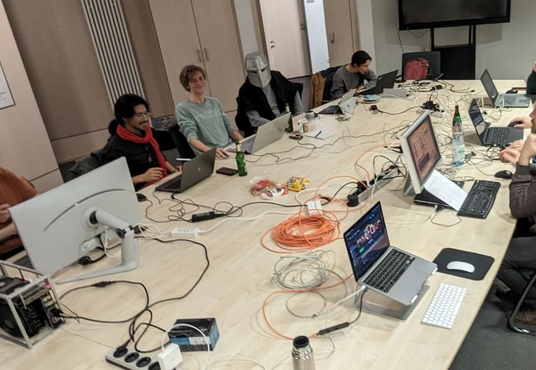
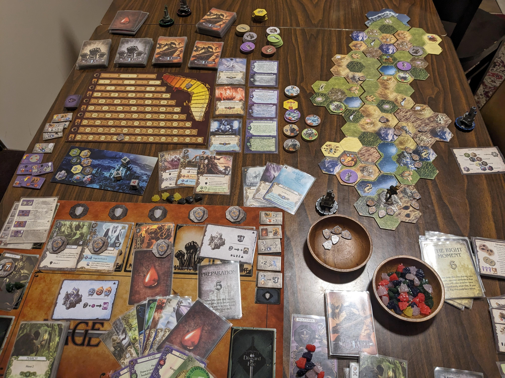
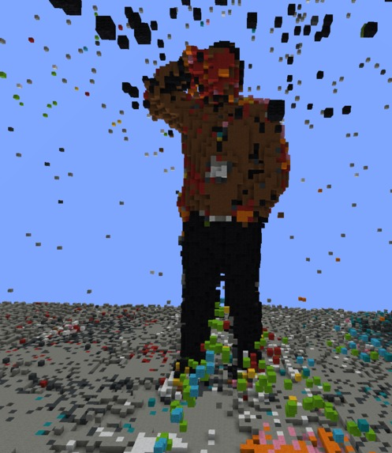

Hey there!
I'm Mahbod
I live in Bremen, Germany, and I study PhD at the University of Bremen.
In recent years, I have been mainly working on spiking neural networks and biologically
plausible models of AI. Currently, I am more focused on Computer Vision models such as
Vision Transformers, and how to improve such methods, mainly with neurophysical intuitions.
In my PhD research, I am studying a framework for networks of stochastically spiking
neurons, called Spike-by-Spike
(SbS), which is also related to non-negative generative
models.
Interests
I spend a lot of my free time playing Age of Empires II, and I am actively
looking for more people to play with. So if you also play or even want to give it a try,
feel free to contact me.
 Age of Empires II - Definitive Edition
Age of Empires II - Definitive Edition

Playing Age of Empires - I am the only one properly dressed for the
occasion.
Despite my hatred for Ameritrash games, I am generally a board game enthusiast.
Recently, Lars introduced Mage Knight to me, which is a game that you can
apparently win very easily by first disabling PvP and then body-blocking other honest
players.
Somehow though, I started to enjoy it way too much.
I also never imagined myself sitting alone playing a board game by myself, but the solo mode
of this game is
surprisingly fun.

Mage Knight (This is not my setup, just a nice one I found on Reddit)
I am very bad at chess (and strangely, I have never felt the need to
improve),
yet I still play one or two Blitz matches every day.
I am also a football fan (the one where you use your "feet" to play with a
"ball",
not the one where you throw an egg and kick each other).
I support Real Madrid (¡Hala Madrid!) and play as a goalkeeper for the
University of Bremen team.
Last year, we became champions of the LBSV league
(...of the third division, but still, champions!).
Here is a picture of us with our trophy:
I am also always on the lookout for hackathons; and by hackathons,
I mean proper, goddamn in-person events where you spend your weekend fighting for your
slice of free pizza and try to squeeze in maybe two hours of sleep on a concrete floor just
to ship a project (that you will never look at again for the rest of your life) on time.
Not one of those lame personal-project show-and-tells that they call “online hackathons”
just to promote their half-working frameworks.
I have always had great experiences at hackathons.
Once in Edinburgh, we pitched self-warming socks that you wear inside a car for some reason,
and also won an Amazon Echo for a project I can’t even remember.
And once in Oxford, a sponsor gave us a bunch of 3D data (PCD) from their smart cars and asked us
to make the best possible visualization.
So naturally, we decided to show the data inside Minecraft.
And then, obviously, we had to build a tool to scan yourself (using LiDAR) and put yourself
into Minecraft.
Somehow, that won us the prize.

Me in Minecraft
Unfortunately, I have not found any interesting hackathons since I moved to Bremen. So, if you found
any around here, please let me know!
Programming
Previously, I had this section filled with all the programming languages and libraries I
used,
as well as the projects I worked on. Recently though, after using a bunch of AI coding
models
and seeing how impressively good they have become, I started to question whether this is
still
relevant, or if it will be relevant in the near future.
So, I decided to instead make this a very short description of how I feel about the
programming
languages that I know.
Currently, most of the time (99% of the time) I am using Python.
I like it. It is simple, it is enjoyable, it is fun to work with.
My past experience has also shown me that
“if there is a way to do it in Python, just do it in Python”.
Like any other sane human, I do my AI stuff in PyTorch.
Sometimes, I even try to write my own custom PyTorch AutoGrad implementations, and then I
cry.
Back in the day, I also tried some web development with Python and did some Telegram bot
development using FastAPI and Flask, which was fun.
I once saw this blog
post
and I was like “Hell yeah!”.
So I started learning Julia and used it for my master’s dissertation,
which led to my Spiking Neural Network (SNN) framework,
FastSpike.jl,
with fast GPU-based simulation.
Do not regret it. Will not recommend it.
I had to learn MATLAB and R at some point, which ironically made my life much better —
because every day that I do not have to use these abominations of programming languages,
I am a bit happier.
I used to be able to write decent C++ code, but it has been a long time since I last used
it.
If there is ever a good excuse, I will happily jump back in and relearn it.
I also wrote some Solidity code for a blockchain course at university, and that was fun.